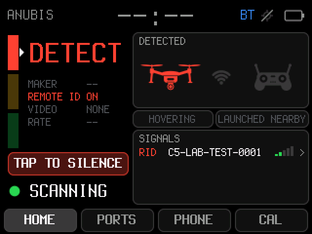
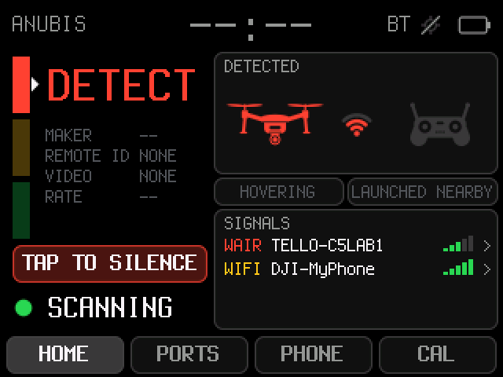
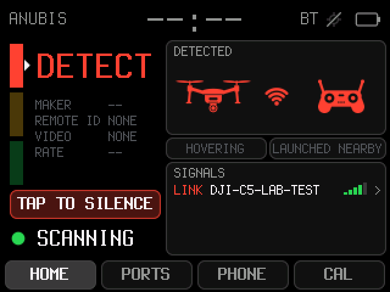
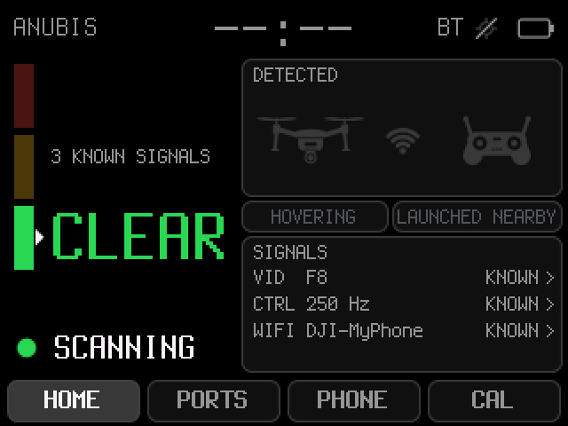
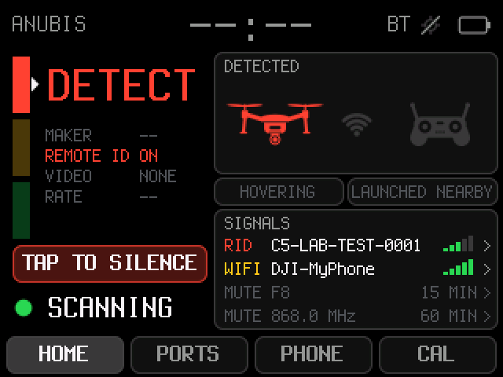

The Anubis 1.0 release on the firmware page has the landscape screen shown here. Bastet 0.9 has a portrait screen. Commands that start with python3 tools/ need the project's tools, which aren't publicly available.
User guide
This guide explains what a finished unit shows, sounds, and logs, what each button does, and what the unit can detect. It's written for you if you have a unit and didn't build it.
Applies to master firmware 0.12.0 (landscape screen), Remote ID sensor 0.7.3, and the RF sensor build described on its page.
- To get a unit to its first alert quickly, use the quickstart.
- For one task at a time, use the how-to pages.
- Each sensor has its own page: the Remote ID sensor guide and the RF sensor guide.
Warning
Read these three limits before you rely on the unit:
- CLEAR doesn't prove that nothing is flying. The sensors miss what happens on channels they aren't listening to, and they can't hear some kinds of aircraft at all.
- An alert means that a signal is on the air, not that an aircraft is flying. A remote control that's switched on and lying on a table raises the same alert as one that's flying.
- The unit gives no distance and no direction. It shows how strong a signal is where the unit is, and whether that signal gets stronger or weaker.
Contents
- What the unit is
- The parts
- Switch the unit on and off
- The screen
- Alert levels
- Signal types
- Sounds
- Sensitivity and other settings
- Calibration
- Mutes
- Follow one signal
- The phone
- The receiver's position
- The card and the walk log
- The battery reading
- When part of the unit isn't working
- What the unit can detect
- Known limitations
- How this is known
- Glossary
What the unit is
The unit is a passive detector for small unmanned aircraft and their remote controls. Two sensor boards listen. The master board combines what they report into one alert level. It shows that level on its screen, plays a sound, writes the alert to a card, and sends it to your phone.
The unit only receives. Neither sensor transmits on any radio. The master transmits one thing, which is its Bluetooth link to your phone.
The unit reports signals. An alert means that a signal of a kind that aircraft and their remote controls use is on the air where the unit is.
A Remote ID broadcast names an aircraft, and the unit shows that name. The unit doesn't check whether the name is true.
The parts
| Part | What it does | Its own page |
|---|---|---|
| The master, a Waveshare ESP32-C5-Touch-LCD-2.8 | The touch screen, speaker, card slot, Bluetooth link, and power button. It holds the battery | Master README |
| The Remote ID (RID) sensor, a Seeed XIAO ESP32-C5 on a Wio-SX1262 board | Listens on Wi-Fi and Bluetooth for Remote ID and for Wi-Fi networks and links that look like a drone's. It also watches one channel of the 868 MHz band | Remote ID sensor guide |
| The RF sensor, a second XIAO ESP32-C5 | Scans 2.4 GHz and 5.8 GHz for control links and video links | RF sensor guide |
| Three antennas | One for 2.4 GHz and 5.8 GHz on each sensor, and one for 868 MHz on the Wio board | Antennas in the wiring guide |
| A 3.7 V lithium polymer battery | Powers the unit away from USB | Power sources in the wiring guide |
| A TF card (optional) | Keeps a log of what was detected, when, and where the unit was | The card and the walk log |
| A phone with the app (optional) | Shows alerts, sends notifications, and sets the sensitivity and the master's clock | Android app notes |
A sensor without its antenna appears to work but receives almost nothing. Make sure all three antennas are fitted.
The two sensors connect to the master's two ports, A and B. It doesn't matter which sensor is on which port, because each sensor tells the master what it is.
The project hasn't published user guides for power and charging or for the phone app. Until it does, use the wiring guide and the Android app notes.
Switch the unit on and off
| To | Do this | What happens |
|---|---|---|
| Switch on | Hold the master's power button for about 1 second | You hear four rising notes, then the Home screen appears. Each sensor usually links within a second or two, and the light at the lower left shows SCANNING in green |
| Switch off | Hold the power button for about 2 seconds | The screen goes dark |
| Run from USB | Connect a USB supply to the master's own USB-C port | The unit runs from USB, and the battery charges at 0.27 A. Use a supply rated 2 A or more and a short cable. A computer's USB port might not supply enough |
The power button doesn't switch off the sensors. They stay powered while a battery or any USB cable is connected, so a dark screen doesn't mean that the unit is off.
Disconnect the battery when you aren't using the unit. The sensors are designed to sleep while the master is off, but that sleep hasn't been tested on either sensor. Two sensors that don't sleep drain a 1000 mAh battery in a few hours to a day.
Don't power the unit from a sensor's USB port alone. The master and the other sensor don't get enough power and restart repeatedly.
The master doesn't warn you when the battery is low, and it doesn't switch anything off. Check the battery icon.
The master doesn't keep the time while it's off. After every start, its clock is unset until your phone connects or a program on USB sets it.
The screen
The screen is in landscape and has a touch panel. A bar runs along the top of every screen. Four buttons run along the bottom: HOME, PORTS, PHONE, and CAL.
Two more screens have no button and open automatically. A signal's own screen opens when you tap its row. The Seeker screen opens while the unit follows one signal.
The top bar
| Item | What it shows |
|---|---|
| ANUBIS | The name of the screen design. It's the same on every unit |
| The time | The master's clock, after a phone or a computer sets it. Dashes appear until then. The time ends in UTC if whoever set it didn't give a time zone |
| BT | The phone link. Blue while a paired phone is connected, yellow while pairing is open or a phone is asking to pair, and gray otherwise |
| A small position mark | Lit while a phone gives the unit its position, crossed out while no phone does |
| The battery icon | The charge. Red when it's low. See The battery reading |
Home

The left side of Home shows the alert level.
| Item | What it shows |
|---|---|
| The ladder | Three steps. Green is CLEAR, yellow is NOTICE, and red is DETECT and CONFIRMED. The step for the current level is lit, and the level's name appears beside it in large letters. At CONFIRMED, the red step blinks |
| At NOTICE | A word or two for each of the first two signals to look at, such as HOPPING, DRONE NAME, WI-FI CARRIER, or SUB-GHZ |
| At DETECT and CONFIRMED | Four short lines. MAKER is filled in when DJI's own element is heard. REMOTE ID shows ON when a Remote ID is heard. VIDEO shows LIVE when video is heard. RATE stays empty in firmware 0.12.0. The TAP TO SILENCE button appears under them |
| With only known signals | A line such as 3 KNOWN SIGNALS above CLEAR |
| The light at the bottom | SCANNING in green while every sensor is working. SCANNING in yellow with a warning sign when the unit has reduced coverage, for example because a sensor is missing, the 868 MHz radio has stopped, or the unit is following one signal. NO RADIO in red when no sensor is up |
To silence the alert that's showing, tap anywhere on the left side. The alert stays silent until something new arrives, such as another signal, a higher level, or another kind of evidence. The screen then shows SOUND OFF.
The right side of Home shows what was heard.
The DETECTED area has three icons: an aircraft, a Wi-Fi sign, and a controller. Each icon turns red only for what was heard, so the icons show what kind of signal is on the air.
| What is heard, at DETECT or higher | Aircraft | Wi-Fi sign | Controller | Screenshot |
|---|---|---|---|---|
| A control link alone | Not lit | Not lit | Red |  |
| Video alone | Gray, with a red camera | Not lit | Not lit |  |
| Control and video together | Red | Not lit | Red |  |
| Remote ID or DJI's own element | Red | Not lit | Red if a control link is heard too |  |
| An aircraft's own Wi-Fi network | Red | Red | Not lit |  |
| A Wi-Fi link in use | Red | Red | Red |  |
- A red controller alone means that a remote control is switched on.
- A red camera alone means that a video transmitter is on the air. It might belong to an aircraft, or it might be a fixed wireless camera, which sends the same kind of signal.
- A signal that's only a notice doesn't turn anything red. At most, an icon or the sign's dot turns yellow. Known and muted signals don't light anything.
- The HOVERING and LAUNCHED NEARBY cards under the icons are always dim. Firmware 0.12.0 doesn't use them.
The SIGNALS area shows up to four rows, one for each signal. Signals that raise the alert come first, then notices, then known signals, then muted signals. If there are more, the last line shows a count, such as +2 MORE.
| Part of a row | What it shows |
|---|---|
| The tag | The signal type: RID, DJI, LINK, WAIR, WIFI, CTRL, HOP, VID, or SUB. Red for a signal that raises an alert, yellow for a notice, gray for a known signal, and MUTE for a muted signal |
| The name | An aircraft's ID, a network name, an FPV channel such as F8, or a packet rate such as 250 Hz. FAINT after a video signal's name means that the sensor no longer calls it video but still tracks something on its frequency |
| Five bars | How strong the signal is at the unit. One bar is 10 dB, or 6 dB for control and video on 2.4 GHz and 5.8 GHz. A known row shows KNOWN instead, and a muted row shows the minutes left |
| > | Opens the signal's own screen, which also says what the signal is and where |
For every signal type, see Signal types.



A signal's own screen
To open a signal's screen, tap its row.

| Item | What it does |
|---|---|
| The tag, and what and where | A description such as analog video 5880 MHz, control 2.4 GHz, aircraft network ch 6, or wi-fi name ch 11 |
| The name and bars | The same as on the signal's row |
| The level in numbers | For the RF sensor, the level over noise, such as 36 DB OVER NOISE. For the Remote ID sensor and the 868 MHz watch, a level in dBm |
| The signal's status | RAISES AN ALERT, A NOTICE: LISTED, AND SILENT, known, MUTED with the minutes left, or NO LONGER ON THE LIST |
| FOLLOW | Starts following this signal. It's lit only for a signal that the unit can follow |
| 15 MIN, 1 HOUR | Mutes this signal for that long |
| UNMUTE | Replaces the mute buttons while the signal is muted, and removes every mute that covers it |
| ALL VIDEO, ALL CONTROL, and similar | Mutes every signal of that type for an hour |
| BACK | Returns to the list. The buttons at the bottom do the same |
Ports
The Ports screen has one block for each of the master's two ports.

| Line | Meaning |
|---|---|
| UP, in green, at the upper right | The sensor is linked and listening. Yellow words mean that it's starting or has paused briefly. FAULT in red means that it reports a failure. DOWN in gray means that the master hears nothing from it. For every state, see When part of the unit isn't working |
| RF SENSOR, RID SENSOR, NO SENSOR | Which sensor reported on this port |
| FIRMWARE | The sensor's firmware version |
| RADIO RUNNING | The sensor is listening. HELD and STOPPED mean that it isn't listening, and ERROR means that its radio has failed |
| SETTINGS OK | The sensor accepted the master's settings |
| RECORDS LOST 0 | Records that went missing between the sensor and the master. A number that keeps growing means a bad connection |
| SUPPLY 4014 mV | The voltage that the sensor measures on its supply. It's a check of the supply, not a battery gauge |
The master's firmware version appears at the bottom left. The card's status appears at the bottom right: CARD: 16 LINES in green while a log is written, WALK LOG: 16 LINES while the walk log is on, CARD FULL, CARD NOT USABLE, or NO CARD. If a battery is fitted, its voltage and charge appear there too.

Phone
| What the screen shows | Meaning and buttons |
|---|---|
CONNECTED or NOT CONNECTED, the number of remembered phones, and this master's name in the app, such as UAS Master-1A2B |
PAIR A PHONE opens pairing for 120 seconds. FORGET PHONES forgets every remembered phone and ends the connection |
| PAIRING IS OPEN, with the seconds left | Select the master in the app now. CANCEL closes pairing |
| PAIRING REQUEST | A phone has tried to pair. ALLOW shows the code, and REFUSE turns the phone away. The request waits 20 seconds |
| TYPE THIS CODE ON THE PHONE, with six digits | The code works for this pairing only. CANCEL ends the pairing |
| NO ROOM LEFT: FORGET PHONES FIRST | Three phones are remembered. The master doesn't drop one to make room |
| BLUETOOTH IS OFF | The Bluetooth link didn't start |
The pairing request and the code appear automatically on any screen, except over an alert at DETECT or higher. In that case, tap PHONE to see them. For more, see The phone.
Cal
Use the Cal screen to calibrate the unit.

| What the screen shows | Buttons |
|---|---|
| How many signals are known, what the last run did, such as LAST RUN: 4 NEW, 0 STRONGER, and one line for each known signal | 30 S, 60 S, and 5 MIN start a calibration of that length. FORGET ALL empties the list |
| NO ALERT FOR 4 MIN 12 S in green | How long the unit has gone without an alert. The count starts again at power-up, at the end of a calibration, and after you forget signals. ALERT NOW appears in red while an alert is active. Watch this line after a calibration |
| While a calibration runs, CALIBRATING, the seconds left, and what the unit has learned so far | DONE ends the calibration and keeps what it learned. CANCEL ends it and keeps nothing from it |
| 1 AIRCRAFT SIGNAL: NOT LEARNED in yellow | A Remote ID or DJI's own element was on the air during the calibration. The unit never learns these signals. See Calibration |
| NO ROOM FOR 2 MORE: FORGET SOME | The list holds 32 signals and was full |
| PORT B NOT UP: NOT LEARNED FROM | A sensor was missing during the run, so the unit learned nothing of that sensor's types |
The yellow line KEEP DRONES AND REMOTES OFF MEANWHILE is the most important rule. The unit learns any video transmitter, remote control, or aircraft Wi-Fi network that's on the air during a calibration.

The Seeker screen
The Seeker screen stays open while the unit follows a signal, whether you started it on the master or on the phone.

| Item | Meaning |
|---|---|
| SEEKING and seconds | How much longer the seek can last |
| The signal's name and type | The same as on its row. For analog video, the screen also shows PAL or NTSC after the sensor identifies it |
| An arrow and a number with SINCE THE START, such as +3.5 dB | A green arrow that points up means that the signal is getting stronger. An arrow that points down means that it's getting weaker. The number is the change since the seek started |
| A bar, and a level such as 28 DB OVER NOISE | The signal over the noise, with a white mark at its highest level |
| STRONGER, WEAKER, STEADY, SIGNAL LOST, TUNING TO THE SIGNAL | The same information in a word |
| SURVEY PAUSED ON 2.4 AND 5.8 GHZ and REMOTE ID IS STILL WATCHED | What following costs. See Follow one signal |
| STOP | Ends the seek. Any button at the bottom also ends it |
To silence the sound, tap the number. This works the same way as tapping the left side of Home.
The backlight
After 30 seconds without a touch, the backlight dims to a fifth of its setting. A touch, an alert at DETECT or higher, or a pairing request brightens it again. The backlight doesn't switch off automatically. Only a brightness setting of 0 switches it off.
Alert levels
| Level | On the ladder | Sound | What raises it |
|---|---|---|---|
| CLEAR | Green | None | Nothing is in the list, or the list has only known and muted signals |
| NOTICE | Yellow | None | A signal that could belong to a drone but isn't enough on its own. For example, a network with a drone maker's name, hopping energy on 2.4 GHz, a Wi-Fi carrier on 5.8 GHz, or bursts on 868 MHz. Also a stronger kind of evidence that's too weak or too new for the current sensitivity level |
| DETECT | Red | Beeps | One signal of a kind that counts as evidence on its own. For example, Remote ID, DJI's own element, a Wi-Fi link, an aircraft's own Wi-Fi network, a verified control link on 2.4 GHz, video on 5.8 GHz, or a control link on 868 MHz |
| CONFIRMED | Red, blinking | A warble | Two such signals from different families, each seen within 10 seconds of the other |
There are four families of evidence:
- Beacon: Remote ID and DJI's element
- Wi-Fi link: a link, and an aircraft's own network
- Control: on 2.4 GHz and on 868 MHz
- Video: analog and digital
Two video signals don't confirm each other, but a video signal and a control link do.
DETECT means that a signal of that type is on the air. A remote control that's switched on but not flying anything raises it, and so does a fixed wireless camera on a video channel. The icons on Home show which type was heard.
- A muted or known signal never raises the level.
- A signal that counts only as a notice doesn't confirm anything, and neither does a video signal listed as FAINT.
- A signal stays in the list for a while after the unit last heard it: 30 seconds for Remote ID, DJI's element, a Wi-Fi link, and a Wi-Fi name, 10 seconds for video, 5 seconds on 868 MHz, and 3 seconds for control, hopping, and a Wi-Fi carrier.
- The RF sensor holds a control link for 8 to 11 seconds after its last packet. A control row therefore disappears 11 to 14 seconds after the transmitter is switched off.
For the full rules, see the alert logic README.
Signal types
Each signal's tag appears on its row. The description appears on the signal's own screen.
| Tag | Description on its screen | What it is | On its own it gives |
|---|---|---|---|
| RID | wifi ch 6, nan, bt4, bt5, bt-lr, fr | An aircraft that broadcasts its identity, which is called Remote ID | DETECT |
| DJI | dji element ch 6 | A Wi-Fi frame that carries DJI's own element | DETECT |
| LINK | wi-fi link ch 36 | A Wi-Fi link in use | DETECT |
| WAIR | aircraft network ch 6 | An aircraft's own Wi-Fi network | DETECT |
| WIFI | wi-fi name ch 11 | A network or device that might be drone equipment | NOTICE |
| CTRL | control 2.4 GHz | A verified control link on 2.4 GHz | DETECT |
| HOP | hopping 2.4 GHz | Hopping bursts on 2.4 GHz that aren't verified as control | NOTICE |
| VID | analog video 5880 MHz, digital video 5807 MHz | Video on 5.8 GHz | DETECT |
| VID with FAINT | faint analog 5880 MHz | A video signal that the sensor no longer calls video | DETECT, but it doesn't confirm anything |
| WIFI | wi-fi carrier 5805 MHz | A Wi-Fi carrier on 5.8 GHz | NOTICE |
| SUB | control 866 MHz | A control link on 868 MHz | DETECT |
| SUB | bursts 866 MHz | Bursts on 868 MHz, too few to be a link | NOTICE |
More about each type:
- RID: The description says how the broadcast arrived: in a Wi-Fi beacon, in a Wi-Fi NAN frame, by Bluetooth 4, by Bluetooth 5, by Bluetooth long range, or in the French format. The name is the ID that the aircraft claims.
- DJI: The sensor recognizes DJI's element but doesn't decode it. This hasn't been tested with a real aircraft.
- LINK: A device with a drone maker's address or a drone's network name, with data flowing both ways between it and another device.
- WAIR: A Wi-Fi network whose name is one that aircraft give their own networks, such as
TELLOorHolyStone. It means that an aircraft flown from a phone is switched on. For the names, see the network names that the Remote ID sensor knows. Anyone can change or copy a network name. - WIFI (name): A network or device whose maker's name or address looks like drone equipment, but where the name could belong to anything. For example, a phone hotspot named
DJI-somethinglooks the same. This type also covers a controller's network, and a phone that only asks for an aircraft's network. - CTRL: A hopping transmitter on 2.4 GHz whose packets keep to a rate that control links use. The name is the rate, such as 250 Hz.
- HOP: Bluetooth also hops. The name is the number of bursts per second.
- VID: A steady carrier on 5.8 GHz with the shape of a video transmitter. The name is its FPV channel, such as F8, or its frequency.
- VID with FAINT: The sensor still tracks something on that frequency. The row stays for up to a minute after the signal was last called video.
- WIFI (carrier): A wide carrier on 5.8 GHz that the sensor identifies as a Wi-Fi network.
- SUB (control): The type of signal that ExpressLRS uses on 868 MHz (LoRa), heard on the watched channel in several different seconds. The name gives the channel and the signal's speed, such as 866.4 MHz SF9.
A row with a yellow tag that would otherwise give DETECT is held back by the sensitivity level, because it's too weak or hasn't been on the air long enough. The unit doesn't hide it. It stays in the list as a notice.
Sounds
The pitch of the sound tells you which family the strongest signal belongs to. The pace tells you how strong it is.
| Family | Pitch |
|---|---|
| Beacon: Remote ID, DJI's element | Lowest |
| Wi-Fi link, and an aircraft's own network | Higher |
| Video | Higher still |
| Control | Highest |
- At DETECT, you hear three quick beeps, then single beeps. The beeps come every 1.6 seconds for the weakest signal and every 0.22 seconds for the strongest.
- At CONFIRMED, you hear a warble between two pitches, long at first and then short. The pauses get shorter as the signal gets stronger.
- NOTICE and CLEAR are silent.
- After 6 seconds, the alert continues at about a third of its volume. A higher level, another signal, or another family starts it again at full volume.
- To silence the alert that's showing until something new arrives, tap the left side of Home.
- At power-up, the four pitches play once, lowest first.
For the pitches in hertz, see the sound section of the master's README.
Sensitivity and other settings
Each type of sensor has its own sensitivity level: low, medium, or high. A new unit uses medium. High gives the most reliable detection. Low gives fewer false alarms and still detects a signal that's really there.
| Sensor | What a lower level changes |
|---|---|
| RF sensor, for control and video on 2.4 GHz and 5.8 GHz | A signal must be further above the sensor's noise. At low, a video carrier must also last 3 seconds and a control link 15 seconds before it counts as more than a notice |
| Remote ID sensor | A decoded ID counts at every level. At low, a weak ID, Wi-Fi link, or aircraft network is a notice and makes no sound, and other Wi-Fi names aren't listed. At high, the list also shows devices that only ask for a drone's network |
| The 868 MHz watch | At every level, the sensor checks each detection three times, and all three must agree. The level sets in how many different seconds a signal must be heard, and how long control must last before it counts as more than a notice: 10 seconds at low, 8 seconds at medium, and no wait at high |
- Except for those Wi-Fi names, a lower level doesn't hide anything. A signal that's too weak for the level stays in the list as a notice.
- For the values behind each level, see the sensitivity section of the master's README.
The unit's screen has no settings page. To change a setting, use your phone or a computer connected to the master's USB port. The master keeps its settings through a restart.
| Setting | What it does | Where to change it |
|---|---|---|
| Sensitivity levels | Set the levels described in the previous table | In the app, for all sensors at once or for each one, or over USB. See the Android app notes |
volume |
The volume, from 0 to 100. 0 is silent. A new unit uses 60 | Over USB |
brightness |
The backlight, from 0 to 100. 0 is off. A new unit uses 70 | Over USB |
region |
DE or US. Sets which sub-GHz channel is watched, 866.425 MHz or 915.5 MHz, and the country that the Remote ID sensor uses |
Over USB |
walk_log |
Whether the card also holds what the sensors measure. See The card and the walk log | Over USB |
For the commands, see Change a setting over USB.
Calibration
Every place has signals of its own that aren't drones and that no rule can tell apart from one. For example, a neighbor's telemetry on 868 MHz, a wireless camera on 5.8 GHz, or a network with a drone's name. A calibration teaches the unit these signals. Calibrate the unit each time you set it up in a new place.
What a calibration does
During a calibration of 30 seconds, 60 seconds, or 5 minutes, the master learns every signal that's in the list or appears. It records what each signal is and the strongest level it was heard at. From then on, that signal is known. It stays in the list in gray, shows KNOWN, and doesn't raise the level or make a sound. A known signal stays known until you forget it.
CLEAR after a calibration means that the unit reports no signal that it hasn't learned. It doesn't mean that the sky is empty.
Calibrate a place
- Switch off every aircraft, remote control, video transmitter, and pair of goggles that you want the unit to detect later. The unit learns a video transmitter, a control link, and the Wi-Fi network and link of an aircraft flown from a phone the same way that it learns any other signal.
- On the PORTS screen, check that both ports show UP.
- Tap CAL.
- If you've moved the unit to a new place, tap FORGET ALL.
- Tap 60 S or 5 MIN. A signal must appear during the calibration to be learned. A short run misses a signal that comes and goes, or one that the sensor calls video only some of the time, and that signal alerts later.
- When the calibration ends, read what was learned, line by line.
- Watch the green NO ALERT FOR line grow.
If an alert remains after a calibration, find out what it is before you do anything else. Calibrate again only for a signal that you've confirmed belongs to the place. An unexplained alert might be a signal you want to detect.
A fixed wireless camera is a good example of what calibration is for. It's a real video transmitter, the unit is right to list it, and no check can tell it apart from an aircraft's camera. After the unit learns it, it stays quiet.
What the unit learns and doesn't learn
- The unit never learns what an aircraft broadcasts about itself, which is Remote ID and DJI's own element. These signals alert during a calibration as they do at any other time, and the Cal screen shows in yellow how many there were.
- A known signal doesn't hide a stronger signal on the same frequency. A learned signal stays quiet up to the level it was learned at plus 10 dB. If it's heard stronger than that, it alerts as it normally would until it has been back below that level for 10 seconds.
- Calibration can also quiet a later transmitter on the same carrier or at the same control packet rate. The unit matches signals like this:
- A video or Wi-Fi carrier by its frequency
- A control link on 2.4 GHz by its sensor and packet rate
- The 868 MHz channel as a whole
- Everything else by its name or address
- On 868 MHz, learned bursts stay quiet as bursts, but they don't hide a control link that appears on the channel later.
- The unit keeps 32 signals. They're stored in the master and survive a restart. A calibration only adds signals. Signals that were already known stay known.
- A calibration can't run while the unit follows a signal, and the unit can't follow a signal during a calibration.
For the full rules, see the calibration section of the master's README.
Mutes
A mute is for a period of time, and a calibration is for a place. A mute doesn't need a quiet minute to learn in, and it ends automatically.
- On a signal's own screen, tap 15 MIN or 1 HOUR to mute that signal. To mute every signal of that type for an hour, tap the button that names the type, such as ALL VIDEO or ALL SUB-GHZ.
- A muted signal stays in the list, dimmed, with MUTE as its tag and the minutes left. It doesn't raise the level or make a sound.
- A mute follows the signal, whatever the sensor calls it next. A muted carrier stays muted as analog video, as digital video, and as a Wi-Fi carrier near that frequency. A muted control link on 2.4 GHz stays muted while it's only hopping energy.
- To remove every mute that covers a signal, tap UNMUTE on its screen.
- A restart of the master forgets every mute. Known signals survive a restart, but mutes don't.
- The list holds 12 mutes. A mute of a whole type uses up to three of them.
A mute of a whole type stops the unit from detecting that type for the hour. For example, if you tap ALL VIDEO because of one camera, you also mute the video of any aircraft that arrives later. Mute the single signal when you can.
Follow one signal
The list tells you that a signal is there. Following tells you, several times a second, whether that one signal is getting stronger or weaker. The firmware calls this seeker mode.
To follow a signal, tap its row, then tap FOLLOW. The Seeker screen opens. A seek started from the screen lasts 300 seconds at most. To end it sooner, tap STOP or any button at the bottom.
- You can follow a video carrier or a verified control link on 2.4 GHz. You can't follow anything that the Remote ID sensor hears.
- Following needs an RF sensor build that includes the seeker. With a build that doesn't include it, FOLLOW stays unlit. See the RF sensor guide.
- While the unit follows a signal, the beeps are short and in the pitch of the followed signal. They get faster as the signal gets stronger, from 1.3 seconds apart with no signal above the noise to 0.2 seconds apart at 50 dB.
- The number on the Seeker screen is the change in signal strength, in dB, since the seek started. Walking toward a transmitter usually makes it rise. Walls, people, and reflections also make it fall and rise.
What following costs
While the unit follows one signal, the RF sensor does nothing else. The scan of 2.4 GHz and 5.8 GHz stops, and the signals that the RF sensor had listed are held as they were. The unit doesn't notice a new control or video link until the seek ends. Remote ID and the 868 MHz watch continue.
The phone
The unit works without a phone. A phone adds three things: alerts where you're looking, control of the sensitivity levels, and the time of day, which the master takes from the phone every time it connects.
For what the app shows and how to use it, see the Android app notes. This section covers the master's side.
The link is Bluetooth LE. In the app, the master is called UAS Master- followed by four characters, as shown on the Phone screen.
Pair a phone
Pairing needs someone at the master. You can pair in either of two ways:
- From the phone: try to pair from the app. The master shows PAIRING REQUEST. Tap ALLOW.
- From the master: tap PAIR A PHONE first. The master shows a six-digit code. Type the code on the phone.
Type the code promptly. Android ends a pairing about 30 seconds after it starts. After you tap ALLOW, pairing stays open for 120 seconds, so you don't need to tap again if the first attempt fails.
Remembered phones
- The master remembers three phones, also through a restart. A remembered phone reconnects automatically without a code.
- The master connects to one phone at a time. While one phone is connected, other phones can't find the master. PAIR A PHONE disconnects the phone that's connected.
- FORGET PHONES forgets all remembered phones.
The clock and what the phone receives
The master takes whatever time the phone sends. If the phone's own clock is wrong, the master's clock is wrong too, and so is every line of its log.
A phone receives what the screen shows: the level, the list, the state of the ports, and the battery. Only a paired phone receives anything, and the link is encrypted.
The receiver's position
The master doesn't know where it is. A phone or a program on USB can give it a position. The master then adds that position to every alert it sends and to the alerts it writes to the card.
- The position is the receiver's, which is where the unit was when it heard the signal. Nothing that the unit records is an aircraft's position, and one position with a level doesn't give a bearing.
- The screen doesn't show the position. The master forgets it after 10 minutes without a new one, and at every restart.
- Whether your app sends the phone's position to the master depends on the app version. See the Android app notes. The mark in the top bar is lit while the master has a position.
- A position is personal data. A card that holds alerts also holds the places where they were raised, so protect it as you would a phone.
For the command and its limits, see the position section of the master's README.
The card and the walk log
With a TF card in its slot, the master keeps its own log of what it detected, when, and, if it was given a position, where the unit was. The log doesn't need a phone, and it stays with the unit.
- Format the card as FAT16 or FAT32. Cards up to 32 GB are sold formatted this way. A larger card uses another format and shows CARD NOT USABLE until you format it as FAT32 on a computer. The master never formats a card and never deletes anything on it.
- Insert the card before you switch the unit on. The master looks for a card at power-up, and then once a minute while there's none.
- The log files are
UASLOG/UAS00001.LOGand up, with a new file each time the master starts. When the card has less than 8 MB free, the master treats it as full and stops writing. - Each log starts with the firmware and settings that wrote it. After that, the master writes every alert: as soon as the level changes, every 5 seconds at DETECT or CONFIRMED, and once a minute at NOTICE. It writes nothing at CLEAR. A known or muted signal that comes and goes doesn't add a line.
- Lines include the time of day after the clock is set. Earlier lines show the time since power-up.
- The Ports screen shows the card's status: CARD: 16 LINES, CARD FULL, CARD NOT USABLE, or NO CARD.
- If a write to the card fails, the master unmounts the card and looks for it again a minute later, in a new file. A log can therefore have a gap of about a minute.
The walk log
The walk log is a setting, walk_log, for measuring reception. When it's on, the card also holds what the sensors measured every second, whether or not anything was listed, and every position that a client sends. The Ports screen then shows WALK LOG instead of CARD.
- The walk log is off until someone switches it on, and it keeps its setting through a restart.
- While the walk log is on and the unit receives positions, the card records where the unit has been. Switch the walk log off after the walk.
- The walk log doesn't record anything that the Remote ID sensor decodes, because those records name other people's aircraft and devices.
For the steps, see Record a walk. For the format of each line, see the card section of the master's README.
The battery reading
The battery icon in the top bar and the numbers on the Ports screen come from the battery's voltage.
- The percentage is an estimate from the usual curve of a 3.7 V lithium polymer battery. It isn't calibrated.
- While the battery charges, the icon shows full or nearly full, because a charging battery reads higher than its real charge. To see the charge, disconnect USB.
- Cold, age, and load all make a battery read lower than its real charge.
- A low battery doesn't make a sound, raise an alert, or switch anything off.
When part of the unit isn't working
The light at the lower left of Home tells you whether the unit hears everything it should. The Ports screen shows the state of each sensor's port.
| State on the Ports screen | Meaning | What to do |
|---|---|---|
| UP, green | The sensor is linked, has the master's settings, and its radio is running | Nothing |
| JOINED, READY, STARTING, yellow | The sensor has answered and is being set up. This is normal for a second or two after power-up | Wait |
| STALE, yellow | No record from the sensor for 3 seconds | Wait. The state turns green again when records resume, or gray after 10 seconds |
| DOWN, gray, with NO SENSOR | Nothing valid from the sensor for 10 seconds, or nothing since power-up | Restart the unit, as described after this table |
| FAULT, red | The sensor reports that its radio failed, it didn't accept a command three times, or it's a build that this master can't talk to | Restart the unit, as described after this table |
- While a port isn't UP, the unit can't detect what that sensor hears. Home's light shows SCANNING in yellow with a warning sign, or NO RADIO in red when neither sensor is up. The alert that the master sends to the phone says that coverage is reduced.
- When a sensor reports a radio fault, the master tells it to restart 5 seconds into the fault, again a minute later, and three times at most.
- If a port stays DOWN or FAULT, switch the whole unit off. The master's power button can't restart a sensor that doesn't respond. Disconnect the battery and every USB cable, wait a few seconds, and then reconnect them.
- A port can be green while the unit has reduced coverage. The Remote ID sensor's 868 MHz radio can stop responding while the sensor continues with Remote ID. The master notices within 10 seconds and reports reduced coverage.
- While the unit follows a signal, the scan of 2.4 GHz and 5.8 GHz is paused, which also reduces coverage. The Seeker screen says so.
For more symptoms and fixes, see Troubleshooting.
What the unit can detect
This table lists what the unit does for each kind of aircraft, and what it has been tested with. None of the rows promises a range. For more about each sensor, see the Remote ID sensor guide and the RF sensor guide.
| Kind of aircraft | What the unit does | Tested with |
|---|---|---|
| Broadcasts Remote ID on Wi-Fi or Bluetooth | DETECT, named with the ID that it claims | A bench transmitter only |
| DJI aircraft that don't broadcast Remote ID | Listed only if the RF sensor identifies their link on 5.8 GHz as digital video | A bench signal source on 5.8 GHz only |
| Analog video on 5.8 GHz | DETECT, named by its FPV channel | Real transmitters |
| Digital video on 5.8 GHz | DETECT as digital video | A bench signal source only |
| ExpressLRS control on 2.4 GHz | DETECT as control 2.4 GHz, with its packet rate | A real remote control |
| ExpressLRS control on 868 MHz | DETECT as control 866 MHz | A bench signal source only |
| Other control systems | Unknown | Untested |
| Flown from a phone over ordinary Wi-Fi, with a known network name, such as Tello, Holy Stone, or Parrot | DETECT as soon as its network names itself (WAIR), and as a link when data flows both ways | One Tello, twice, indoors. Range and timing weren't measured |
| A device with a drone maker's name or address and nothing more | NOTICE, then DETECT when data flows both ways between it and another device | Made-up devices only |
| Small DJI aircraft with enhanced Wi-Fi: Mavic Mini, Mini SE, and Mavic Air of 2018 | Not detected by the Remote ID sensor | Untested |
| Toys with their own radio on 2.4 GHz | Unknown. At most, the hopping 2.4 GHz notice | Untested |
More about each kind:
- Remote ID: The bench transmitter used a made-up identity. A Wi-Fi beacon on channels 6 and 36, NAN, the French format, Bluetooth 4, and Bluetooth 5 in both of its modes each gave DETECT within 0.4 to 8 seconds. The sensor doesn't listen on the 5 GHz channels 52 to 144.
- DJI without Remote ID: DJI's own link isn't Wi-Fi, and the unit has no decoder for the identity that DJI sends inside it. On 2.4 GHz, where that link can also be, the RF sensor doesn't look for video. No real DJI aircraft has been in front of the unit.
- Analog video: The unit listed a real transmitter within seconds when it was beside the unit. On walks, the sensor reported it while it was 23 dB or more above the sensor's noise, and not below, and the alert came and went near that level. A fixed wireless camera is listed the same way, correctly, because it's the same kind of transmitter.
- Digital video: Of two kinds played from the bench source, one was listed after 10 to 13 seconds and the other wasn't listed. A Wi-Fi network on the upper 5 GHz channels can read as digital video.
- ExpressLRS on 2.4 GHz: Against a real remote control at its lowest power in the same room, the sensor verified 250, 333, and 500 Hz within about a second, in 99 of 100 checks. It reports the rate it finds and doesn't report a different one.
- ExpressLRS on 868 MHz: The unit watches one channel, which a hopping link visits about one time in 13. The 915 MHz channel is untested.
- Other control systems: On 2.4 GHz, the RF sensor verifies a control link by its packet rate, at the rates that ExpressLRS uses. Another system is listed as control only if its packets keep to one of those rates. Otherwise, it gives the hopping 2.4 GHz notice at most. On 868 MHz, the sensor doesn't find a link that isn't LoRa, such as Crossfire's fast mode. No control system other than ExpressLRS has been measured.
- Phone-flown aircraft: The network names come from manuals and public lists. The unit doesn't find an aircraft whose owner renamed its network, or whose name isn't on the list.
- Devices with a drone maker's name: A maker's camera or microphone that talks to a phone also reads as a link. Calibration removes it at a given place.
- Small DJI aircraft with enhanced Wi-Fi: Their Wi-Fi uses channels that an ordinary Wi-Fi receiver can't decode.
- Toys: The sensor lists them as control only if their packets keep to a rate that it looks for.
The following apply to every row:
- The unit has been tested with three kinds of real equipment: analog video transmitters, an ExpressLRS remote control, and one Tello Wi-Fi drone indoors. Everything else in the table was tested with bench sources or not at all.
- A verified control link means that something transmits the way a remote control does. It isn't proof of an aircraft. Short runs of verified control, of about 15 seconds, have been listed with no remote control of the project's switched on. What sent them is unknown.
- The sensors take turns on their channels, so they can miss a signal that's on the air for only a few seconds.
- The higher you carry the unit's antennas, the further they hear a transmitter that's near the ground.
Known limitations
These items haven't been measured or tested:
- How long a full battery powers the unit.
- Whether the sensors sleep while the master is off.
- Inserting a card while the master runs.
- Calibration in a place with more than a few signals, and whether 10 dB is the right margin everywhere.
- Following a signal on a walk toward a real transmitter.
- Pairing with an iPhone, using a second phone beside the first, and pairing from across a room.
- The 915 MHz channel that the
USregion watches. - DJI's own element with a real aircraft.
- The battery percentage against a meter, or over a full discharge.
- Any step of this guide on a unit, by someone following it.
How this is known
Each statement in this guide about the hardware is one of three kinds:
| Kind | Meaning |
|---|---|
| Read | Taken from the firmware's code, or from the page or manufacturer's page named in this table |
| Measured | Seen on hardware, on the date and with the setup named in this table |
| Estimated | Worked out from those figures |
A statement about what the unit does that isn't listed in this table is read from the firmware's code.
| Statement | Kind | Source or setup |
|---|---|---|
| Hold the power button for about 1 second to switch on and about 2 seconds to switch off | Read | Wiring guide, first power-up |
| Each sensor links within a second or two of power-up | Measured | 14 November 2026, the first night with all three boards. See the master's README |
| A sensor without its antenna receives almost nothing | Read | Wiring guide, antennas |
| The battery charges at 0.27 A from USB | Read | Wiring guide, power sources |
| A computer's USB port might not supply enough | Estimated | Wiring guide, power sources |
| Sensor sleep hasn't been tested | Read | Both sensors' READMEs |
| Two sensors that don't sleep drain a 1000 mAh battery in hours to a day | Estimated | Wiring guide, power button |
| A sensor's USB port alone doesn't power the unit | Read | Case 5 of the wiring guide's power table |
| A control link is held 8 to 11 seconds after its last packet | Read | RF sensor's control link notes |
| A control row disappears 11 to 14 seconds after the transmitter is switched off | Estimated | From the hold times in the alert levels section and the RF sensor's hold |
| Every test source was detected at every sensitivity level, and no level reported anything in two quiet minutes | Measured | One bench, 14 November 2026, one run each. See the master's README |
| The master keeps its settings through a restart | Measured | See the master's README |
| A 30-second calibration learned one of two fixed cameras, and the other alerted twice afterwards | Measured | 15 November 2026, at one place with two fixed cameras |
| A learned fixed camera stays quiet | Measured | 15 November 2026, the same place |
| Calibration rules | Read | Calibration section of the master's README |
| Following a signal | Measured | On a bench, 14 November 2026, with stepped signals. See the seeker section of the master's README |
| Android ends a pairing about 30 seconds after it starts | Measured | 14 November 2026. See the master's README |
| A phone with a wrong clock sets the master's clock wrong | Measured | 14 November 2026, a phone 23.6 days behind. The same page |
| Pairing and use with one Android phone | Measured | 14 November 2026. The same page |
| Inserting a card while the master runs hasn't been tested | Read | Card section of the master's README |
| A log can have a gap of about a minute | Measured | 15 November 2026, five times on two units |
| The battery percentage isn't calibrated or compared with a meter | Read | Battery section of the master's README |
The US region's channel |
Read | From a channel plan. Never tested |
| Remote ID on every listed transport | Measured | 15 November 2026, with the project's bench transmitter and a made-up identity |
| The sensor doesn't listen on 5 GHz channels 52 to 144 | Read | Remote ID sensor firmware |
| DJI's link and identity | Read | No real DJI aircraft tested. Digital video shown with a bench source on 5.8 GHz only |
| Analog video | Measured | 14 and 15 November 2026, with a real transmitter beside the unit and on walks |
| Digital video | Measured | 15 November 2026, bench signal source only |
| ExpressLRS on 2.4 GHz | Measured | 15 November 2026, a real remote control at its lowest power in the same room |
| ExpressLRS on 868 MHz | Measured | 15 November 2026, a model of the link from a bench signal source |
| Other control systems | Read and estimated | From how the check works. No other system measured |
| Phone-flown aircraft and devices with a drone maker's name | Measured, with made-up devices only | Network names read from manuals and public lists |
| Small DJI aircraft with enhanced Wi-Fi | Read | |
| Toys with their own radio on 2.4 GHz | Estimated | Not tested |
| Short runs of verified control with no remote control of the project's switched on | Measured | 15 November 2026, about 15 seconds, three times in a day |
| Higher antennas hear further | Estimated | From how radio waves travel over ground. Not measured with this unit |
Glossary
| Term | Meaning in this guide |
|---|---|
| Remote ID | A broadcast in which an aircraft names itself, on Wi-Fi or Bluetooth. Several countries require it for many aircraft |
| FPV | First-person view. Flying by a live video picture from the aircraft. The video link is usually on 5.8 GHz |
| Analog video, digital video | The two ways an FPV picture is sent. The RF sensor tells them apart by the width and shape of the carrier |
| FPV channel | A name for a video frequency, a letter and a digit, such as F8 for 5880 MHz |
| Control link | The radio link from a remote control to its aircraft. Most control links change frequency many times a second |
| ExpressLRS | A widely used open control link, on 2.4 GHz and on 868 MHz or 915 MHz |
| Packet rate | How many packets a second a control link sends. The RF sensor looks for rates from 50 to 500 Hz |
| Hopping | Changing frequency from packet to packet. Control links do it, and so does Bluetooth |
| Sub-GHz | The bands below 1 GHz that control links use: 868 MHz in Europe and 915 MHz in America |
| LoRa | The type of radio signal that ExpressLRS uses on 868 MHz. SF6 to SF9 are four of its speeds |
| Carrier | A steady signal on one frequency, such as a video transmitter's |
| dB over noise | How far a signal is above the sensor's own noise. More is stronger. It isn't a distance |
| dBm | A power level. -50 dBm is strong, and -90 dBm is weak |
| Port | One of the master's two connections for a sensor, A and B |
| UP | A sensor is linked and listening |
| Notice | A signal that's listed but doesn't make a sound or raise an alert |
| Family | One of four groups of evidence: beacon, Wi-Fi link, control, and video. Two different families give CONFIRMED |
| Aircraft network | A Wi-Fi network that an aircraft flown from a phone opens itself. Its row has the WAIR tag |
| Known | Learned by a calibration. Listed in gray and silent |
| Icons | The aircraft, the Wi-Fi sign, and the controller on Home. Each turns red only for what was heard |
| Muted | Silenced for a time from the signal's own screen. Listed dimmed and silent |
| Faint | A video signal that's tracked on its frequency and no longer called video |
| Follow, seek | Staying on one signal to see whether it gets stronger or weaker |
| Coverage | Whether every sensor is listening. Coverage is reduced when a port isn't UP, when the 868 MHz radio has stopped, or while the unit follows a signal |
| Walk log | A setting that makes the card hold what the sensors measure, for measuring reception on a walk |
| TF card | A microSD card |